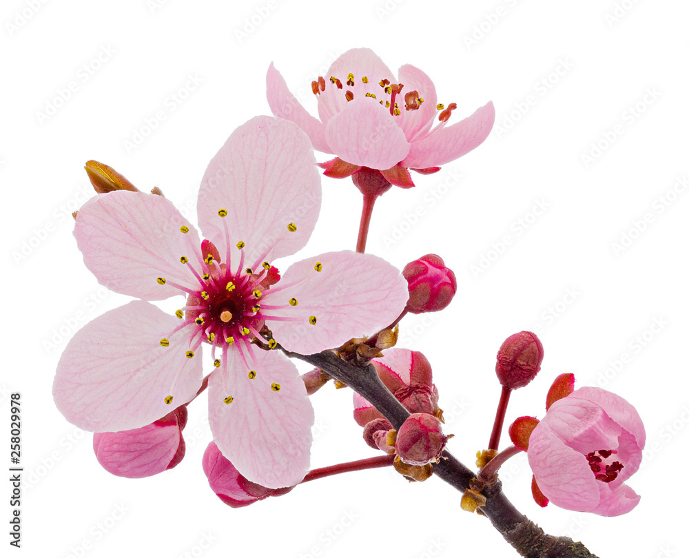
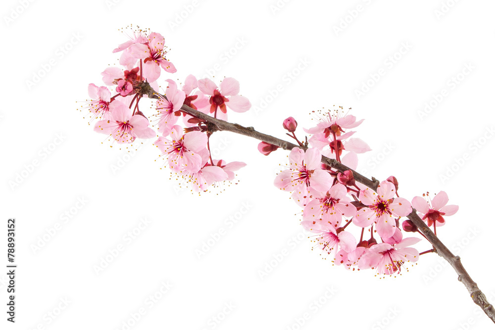

Simboliza tanto la vida y la muerte como la belleza y la violencia.
Como la llegada de la primavera promete una nueva vida, la floración de los cerezos trae un sentido de vitalidad y dinamismo.
Al mismo tiempo, su corta vida útil es un recordatorio de que la vida es fugaz.
 